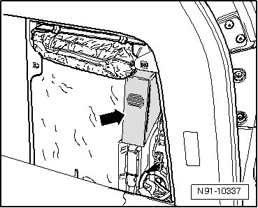
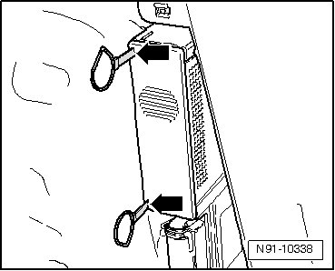
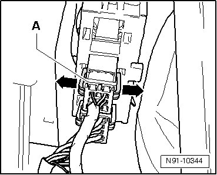
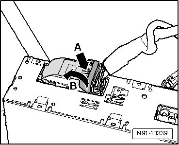
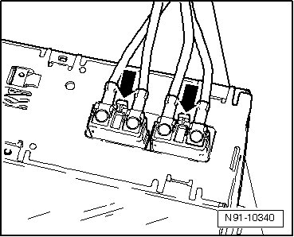
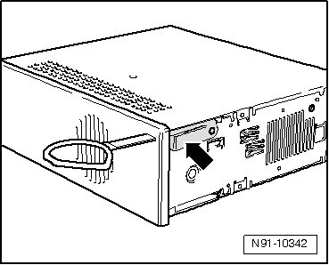

Entertainment System Control Module: Service and Repair
TV Tuner
The TV tuner is installed in the luggage compartment behind the right side trim flap - arrow -.

Only two of the four tools are needed to remove the TV tuner.
Special tools, testers and auxiliary items required
• (T10057)Radio Removal Tool (T10057)
Removing
Before starting repair work, perform the following:
- Switch off ignition, switch off all electrical consumers and remove ignition key.
Now, perform the following work procedure:
- Insert Radio Removal Tools (T10057) into release openings - arrows - until they engage.

- Remove TV tuner from installation bracket by pulling on removal tool gripping rings.
- Disconnect voltage supply connector - A - by pressing both securing tabs on connector in - direction of arrow - and then removing connector.

- Release 54-pin connector by pressing on clip - A - and at the same time, tipping catch - B - in - direction of arrow -.

- Release antenna connection connectors by press on catch - arrows - and then removing connectors.

Installing
- Remove removal tools from unit by pressing on spring - arrow - and then removing tool.

- Reconnect connectors on TV tuner.
- Slide TV tuner straight into installation bracket until it engages.
- Check TV tuner setting and code it accordingly, --> Owner's Manual.